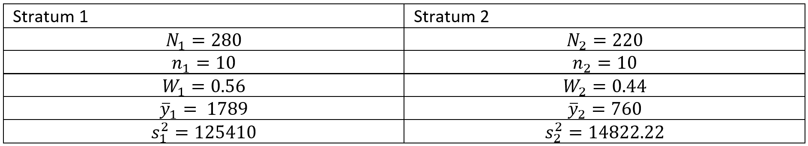

7 7th Tutorial
Exercise 7.1 An assignment was given to four students attending a sample survey course. The problem was to estimate the average time per week devoted to study in Punjab Agricultural University (PAU) library by the students of this university. The university is running undergraduate, master’s degree and doctoral programs. Number of students registered for the three programs is \(1300,450\), and \(250\) respectively. Since the value of the study variable is likely to differ considerably with the program, the investigator divided the population of students into 3 strata: undergraduate program (stratum I), master’s program (stratum II), and doctoral program (stratum III). First of the four students selected WOR simple random samples of sizes \(20,10\) , and \(12\) students from strata I, II, and ill respectively, so that, the total sample is of size \(42\). The information about weekly time devoted in library is given in the csv file here
## [1] 0 4 3 5 2 0 3 1 4 3 6 8 10 2 9 4 6 1 2 3## [1] 12 9 11 13 8 6 10 9 11 7## [1] 10 14 20 11 16 13 24 15 14 18 19 20## [1] 20## [1] 10## [1] 12## [1] 3.8## [1] 9.6## [1] 16.16667## [1] 7.957895## [1] 4.933333## [1] 17.06061## [1] 2000#determine an estimate of the population mean by stratified sample
W1=N1/N; W2=N2/N ; W3=N3/N
W1; W2; W3## [1] 0.65## [1] 0.225## [1] 0.125## [1] 6.650833#Variance of sample mean = sum(((1-fh)/nh)*(Wh^2*Vh^2), fh=nh/Nh
var_str=((W1)^2)*((N1-n1)/N1)*(yvar1/n1)+((W2)^2)*((N2-n2)/N2)*(yvar2/n2)+((W3)^2)*((N3-n3)/N3)*(yvar3/n3)
var_str## [1] 0.2110923## [1] 7.569729## [1] 5.731938## [1] 13301.67## [1] 844369## [1] 15139.46## [1] 11463.88Exercise 7.2 An insurance company’s records show that out of the total of \(500\) claims, 280 are major claims (from Rs \(1000\) to Rs \(2500\)) and \(220\) are minor (below Rs \(1000\)). A WOR simple random sample of \(10\) claims was drawn from each category (stratum), and claim amounts were recorded as :
| Stratum1 | 1200 | 1600 | 1800 | 1400 | 1980 | 2110 | 2440 | 1660 | 1790 | 1910 |
| Stratum2 | 720 | 880 | 760 | 660 | 790 | 840 | 550 | 960 | 640 | 800 |
Estimate the total amount of all the \(500\) claims, and construct the confidence interval for it.

\[{\bar{y}}_h=\frac{\sum_{i=1}^{n}y_{hi}}{n_h}; ~~~~\ \ s_h^2=\frac{\sum_{i=1}^{n}\left(y_{hi}-{\bar{y}}_{hi}\right)^2}{n_h-1}\ ; ~~~~\ \ W_h=\frac{N_h}{N}\ ;~~~~\ N=N_1+N_2=500\ \]
The estimate of average amount of claims is
\(\ \ {\bar{y}}_{str}=W_1{\bar{y}}_1+W_2{\bar{y}}_2=1336.24\)
Also, the variance of the mean is
\[v\left({\bar{y}}_{str}\right)=\sum_{h=1}^{L}W_h^2\ \frac{s_h^2}{n_h}\frac{N_h-n_h}{N_h}=4066.313\]
we obtain the limits of confidence interval as
\[{\bar{y}}_{str}\pm Z_{1-\propto/2}\ \sqrt{v\left({\bar{y}}_{str}\right)} ; Z_{1-\propto/2}\approx2\]
\[1336.24\pm2\ \sqrt{4066.313} \]
\[ [1208.705,\ 1463.775\ ]\]
We are \(95\%\) confidence that the average amount of claims is between \([1208.705, 1463.775]\)
Note: Multiply these limits by \(N\) to obtain the limits for the population total (T). OR
\[{y\prime}_{str}=N \times {\bar{y}}_{str}=500\times 1336.24=668120\]
Estimator of the variance of population total are obtained by
\[ v(y^\prime_{str})=N^2\times v({\bar{y}_{str}})=\left(500\right)^2\left(4066.313\right)=1016578267\]
\(95\%\) CI for total estimation
\[{y\prime}_{str}\ \ \pm Z_{1-\propto/2}\ \sqrt{v\left({y\prime}_{str}\right)}\]
\[668120\pm2\ \sqrt{1016578267\ }\] \[= [604352.4\ \ ,\ 731887.6]\] Code:
## [1] 10## [1] 1789## [1] 125410## [1] 10## [1] 760## [1] 14822.22## [1] 500## [1] 0.56## [1] 0.44## [1] 1336.24#Variance of sample mean =sum(((1-fh)/nh)*(Wh^2*Vh^2), fh=nh/Nh
var_str=((W1)^2)*((N1-n1)/N1)*(v1/n1)+((W2)^2)*((N2-n2)/N2)*(v2/n2)
var_str## [1] 4066.313## [1] 1463.775## [1] 1208.705## [1] 668120## [1] 1016578267## [1] 731887.6## [1] 604352.4